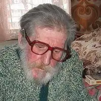
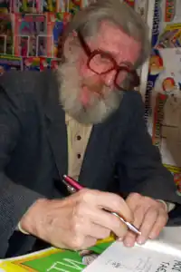

Ячейкін Юрій Дмитрович — український прозаїк, гуморист і сатирик.
Народився в Свердловську (нині — Єкатеринбург, Росія) в родині потомственого сталевара. Після закінчення середньої школи вступив до Київського державного університету ім. Т. Г. Шевченка на факультет журналістики (1952-1957). У 1957-59 роках працював на заводі "Арсенал" в багатотиражної газеті "Арсеналец". Був фейлетоністом газети "Вечірній Київ" (1960-1961), журналу "Перець" (1961-1968), працював в редакціях журналів "Вітчизна" і "Дніпро". Писав під псевдонімами Бор. Карамішев, Георгій (Джордж) Козачук, Ю. Малий, Хр. Реп'ях, Ю. Сокалець, Я. Юрась, М. Юрчак і іншими, які письменник і сам вже забув через їхню численність: "Я зараз навіть і не згадаю все мої псевдоніми, які використовував у періодиці. Я писав величезна кількість фейлетонів і статей, підписувався по-різному, тому що в номер іноді йшло по сім фейлетонів ... "
Писати Ячейкін почав ще в юності. За його власним визнанням, мав тяжіння тільки до фантастики, накидаючи на будь-яку книжку будь-якого автора цього жанру. Під час перебування свою студентом університету разом з майбутніми українськими письменниками Василем Симоненком і Анатолієм Перепадя видавав рукописний журнал "ПРАСКА" ( "Універсальне товариство юних гуморістів"), в якому надрукував свої перші фантастико-гумористичні твори "Нова історія Адама і Єви" і "Що і треба було довести ". Перша офіційна публікація — гумореска "Чому батьки тікають у відпустку?", Надрукована в 1959 році в п'ятому номері журналу "Вітчизна". З тих пір він постійно публікувався в періодичній пресі, а з 1965 року майже щороку стали виходити і збірники його юмористики. Член Спілки письменників України (1967). Юрій Ячейкін почав отримувати міжнародні премії на гумористичних конкурсах, а його "допотопним історія" (1966) увійшла до антології "Майстри світового гумору" (Югославія, 1968). У 1970 році письменник опублікував літературно-критичне есе "Терези сміху: Нотатки про деякі Тенденції розвитку новітнього українського прозові гумору". У цій книзі є розділ "Гумор і фантастика", в якому автор розглядає питання про те, скільки гумору можуть дати чорти, русалки та інші казкові персонажі. Письменник створив велику кількість книг для дітей, серед яких також і збірка фантастико-гумористичних повістей "Мої и чужі Таємниці" (1967, 1979, 1989), фантазія-жарт "Народження Адама" (1968), "Мемуари пророка Самуіла" (1971) , "Важко буті відомим" (1984), правдива історія з побрехеньками "Важко життя и небезпечні пригоди Павла Валеріановіча Хвалімона" (1971), історико-пригодницька повість "Гості з греків" (1986, в російській перекладі "Божедар або Візантійський двійник") , дилогія "Друге бажання королеви" (2004) і "Війна троянд" (2005), інші твори. Головною ж своєю книгою Юрій Дмитрович вважав чотири повісті, опубліковані під однією обкладинкою і названими "Слідство веде прокуратор" (1989). На рахунку Ячейкін також написаний у співавторстві з Петром Поплавським роман-трилогія "Під кодовою назвою" Едельвейс "(1979-1984), повісті" Ніндзя Токуґави "(1991)," За образом та подобою "," Вантаж для горил "(обидві — 1974), "Слідство, яке відбулося" (1983) та інші пригодницькі твори. Крім літератури, Юрій Ячейкін також займався і карикатурою. Деякі його твори, надруковані в журналі "Перець" та інших виданнях були забезпечені авторськими ілюстраціями і автошаржі. Твори українського письменника перекладені більш ніж двадцятьма мовами світу. Жив письменник в Києві, на Русанівці. Дуже любив собак і кішок. В останні роки сильно хворів, майже осліп. Помер в червні 2013 року. Фантастика у творчості автора: Юрій Ячейкін належить до унікальної плеяди українських фантюморістов, — письменників, які обрали темою своєї творчості гумористичну і сатиричну фантастику, — для дітей і дорослих. Автор охоче включав фантастичні прийоми і сюжети в свої збірники юмористики. Із задоволенням займався дотепним пародіюванням НФ. Пародії об'єднані автором в "Малу антологію НФ". Фант-мікропародіі склали цілий авторський цикл, — "Газета з кошика". У 1965 р Юрій Ячейкін опублікував фантастико-гумористичну повість "Дивовижні пригоди капітана Небреха". Після цього побачили світ "Зоряні мандри капітана Небреха" (1969, 1973), що стали українським бестселером підростаючого покоління, а головний герой — капітан міжзоряного плавання Небреха і його вірний штурман Азимут — улюбленими героями юних читачів. Український "космічний Мюнхгаузен" — капітан Небреха (близький родич лемовского Йона Тихого), — представник і активний учасник міжнародного клубу веселих і кмітливих брехунів (по-українськи — брехунів), — "зоряних капітанів", галактичних мандрівників, докторів всезвёздних наук, та ін , та ін. Пригоди цього персонажа — і пародія на сюжети фантастики, і оригінальний мотив авторської української фант-юмористики. За дотепним визначенням самого автора, "Небреха — це козак-характерник в Космосі". Капітан Небреха є типовим персонажем пригодницької літератури — невисокого зросту, шкандибає на одному протезі і димлячий свою улюблену люльку. І фантастичні розповіді про його подвиги завжди перемежовуються небезпечними ситуаціями, з яких капітан і штурман виходять з честю і гідністю. Вони побували не тільки на різних планетах і в різних куточках космічного простору, але навіть проникали в минуле і антисвіт. Пригоди міжзоряного капітана і козака склали найбільший розгорнутий фант-цикл письменника, — "Вселенські пригоди капітана Небреха" ( "Всесвітні походеньки капітана Небреха"), куди, — крім основних десяти найбільш правдивих розповідей капітана, — увійшли ще й кілька гумористичних повістей і окремих гуморесок , тематично пов'язаних з мемуарами галактичного звездопроходца. У 2014 році улюбленому фантастичного персонажу виповнюється півстоліття.